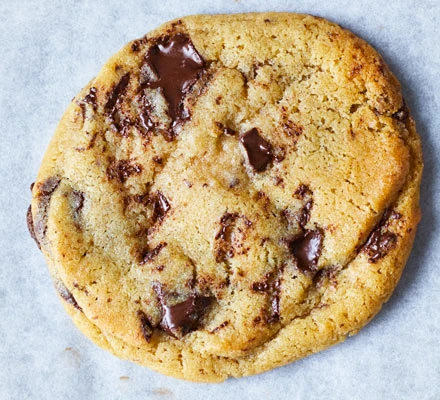

Easy chocolate chip cookies

Learn how to make classic chocolate chip cookies and enjoy them still warm from the oven. Perfect for a bake sale or with your afternoon tea.
Ingredients
- 120g butter, softened
- 75g light brown sugar
- 1 medium egg
- 1 tsp vanilla extract
- 180 g plain flour
- 1/2 tsp bicarbonate of soda
- 150 g dark chocolate, cut into chunks
Steps
- Heat oven to 180C/160C fan/gas 4 and line two baking sheets with parchment. Cream the butter and sugars together until very light and fluffy, then beat in the egg and vanilla. Once combined, stir in the flour, bicarb, chocolate and ¼ tsp salt.
- Scoop 10 large tbsps of the mixture onto the trays, leaving enough space between each to allow for spreading. Bake for 10-12 mins or until firm at the edges but still soft in the middle – they will harden a little as they cool. Leave to cool on the tray for a few mins before eating warm, or transfer to a wire rack to cool completely. Will keep for three days in an airtight container.